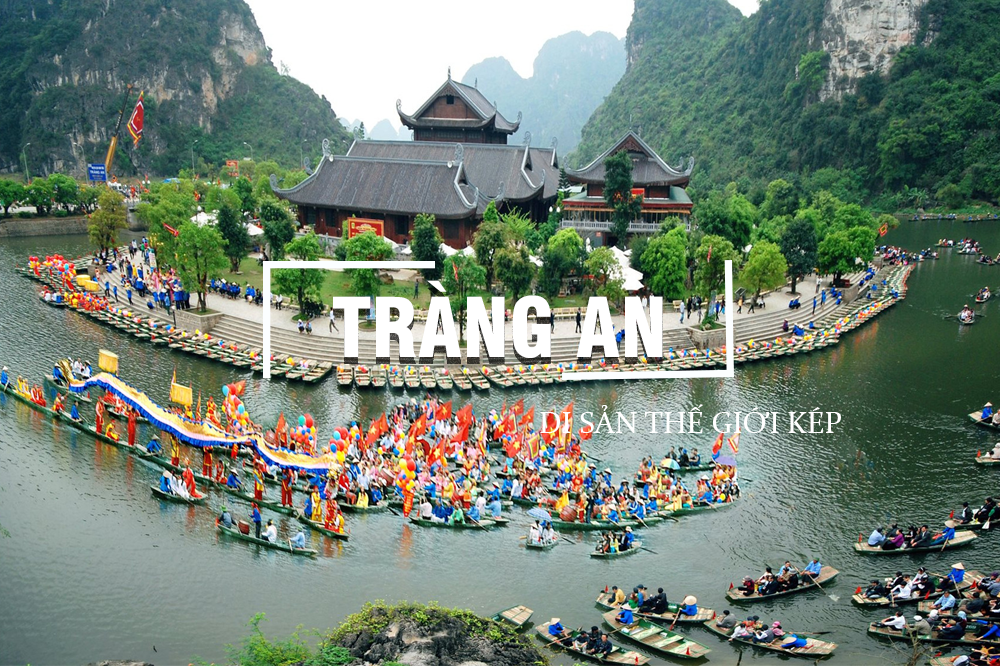
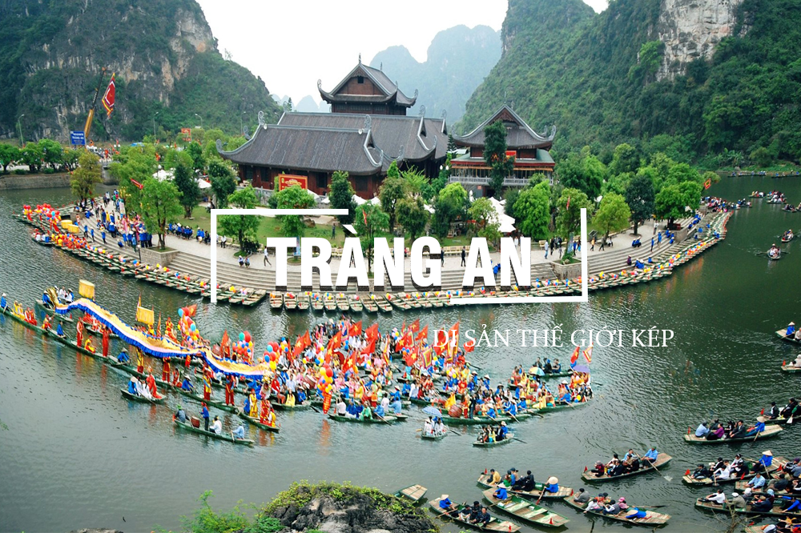

HÀ TIÊN
Thành Phố Biên Giới Trữ Tình
Hà Tiên là thị xã ven biển thuộc tỉnh Kiên Giang, nằm ở vùng biên giới Tây Nam giáp Campuchia và vịnh Thái Lan. Nơi đây nổi tiếng với cảnh quan thiên nhiên thơ mộng và giàu giá trị lịch sử, gắn liền với công lao khai phá của dòng họ Mạc từ thế kỷ XVII. Hà Tiên vừa mang vẻ đẹp yên bình, vừa đậm chất văn hóa, là điểm đến lý tưởng cho du khách yêu thích thiên nhiên và khám phá di sản.
Hà Tiên gắn liền với công lao khai phá của Mạc Cửu – người Hoa di cư, đã quy phục chúa Nguyễn và biến vùng đất hoang vu thành thương cảng sầm uất vào thế kỷ XVII. Dưới thời họ Mạc, Hà Tiên trở thành trung tâm giao thương, văn hóa và quân sự quan trọng ở phương Nam. Nơi đây còn nổi bật với dòng thơ “Hà Tiên thập vịnh”, phản ánh vẻ đẹp sơn thủy hữu tình và đời sống tinh thần phong phú. Đến nay, Hà Tiên vẫn lưu giữ nhiều công trình cổ kính, đền miếu và lễ hội truyền thống đậm đà bản sắc.
Hà Tiên nằm ở vùng Tây Nam của Tổ quốc, vừa giáp biển, vừa giáp núi, tạo nên địa hình đa dạng và phong cảnh hữu tình. Nơi đây nổi bật với những thắng cảnh thiên nhiên như bãi biển Mũi Nai, núi Đá Dựng, Thạch Động, và sông Giang Thành hiền hòa. Cảnh quan Hà Tiên mang vẻ đẹp hoang sơ nhưng đầy thơ mộng, rất thích hợp cho những ai yêu thiên nhiên và thích khám phá.
Chợ đêm Hà Tiên là nơi lý tưởng để thưởng thức các món ăn đặc sản như xôi xiêm, cà xỉu, bún kèn, và mua sắm các sản phẩm thủ công mỹ nghệ, hải sản khô. Đây cũng là nơi giao thoa văn hóa của các dân tộc Việt, Hoa và Khmer.
Chùa Phù Dung, Chùa Tam Bảo, Đền Thờ Họ Mạc mang đậm nét kiến trúc truyền thống
Thạch Động, Núi Đá Dựng, Đảo Hải Tặc, ... Nơi có nhiều hang động kỳ thú và được xếp hạng là di tích cấp quốc gia. Hang động đá vôi huyền bí, hòn đảo với vẻ đẹp hong sơ
Thư giãn trên cát trắng mịn, bơi lội, tắm nắng, ngắm bình minh hoặc hoàng hôn cực đẹp.
Đây là món đặc sản nổi tiếng, với sợi bún mềm kết hợp nước lèo nấu từ cá, nước cốt dừa, nghệ và sả tạo nên hương vị béo thơm, cay nhẹ, rất lạ miệng.
Cà xỉu là loại hải sản lạ tai, trông giống con ngao nhỏ, được muối mặn rồi trộn gỏi chua ngọt với rau răm, đậu phộng và nước mắm chanh tỏi.
Món ngọt độc đáo có nguồn gốc từ văn hóa Khmer – Thái Lan, gồm xôi nếp dẻo ăn cùng lớp nhân làm từ trứng, nước cốt dừa và đường thốt nốt.

Được đánh bắt trong ngày và chế biến tại chỗ, các món hải sản ở đây giữ trọn hương vị biển cả và luôn làm hài lòng thực khách gần xa..


 
